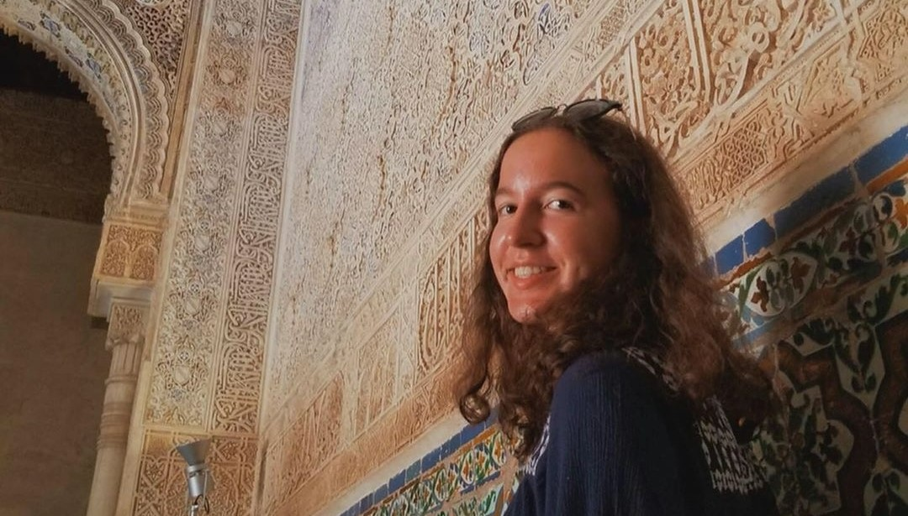

Hey, I’m Adriana! 👋 (she/her)
I’m a transportation/urban tech nerd, and incoming Civil Engineering student @UWaterloo.
Glad you're stopping at my small street 🚋 of the internet :)
(Above) I love to travel to explore new structures and cities. 🌍 This is me wandering through the mystical halls of the Alhambra in Granada, Spain.
My current interests include micro mobility, mixed used development and mass timber. I'm looking to work in the transportation technology sector to contribute to making our cities sustainable and accessible.
Currently:
- Incoming Innovation Developer @ RBC 🖥️
- Reading many interesting books 📚.
- Talking to cool youth worldwide on my podcast 🎙️. So, far I've interviewed over 30 youth individuals on topics ranging from inequities and opportunities in STEM field during the pandemic. I believe that more women voices like my own should be featured in the audio world. (Check out my blog post about this here).
- Volunteering at Urban Minds.
- Building Settlegration, an app 📱 that helps Canadian newcomers settle more smoothly in Canada through volunteer-based services, a World Semifinalist at the Global 2018 Technovation App Challenge. My team recently received $5k seed funding from the Student Life Network in 2021. We were also featured in the Girls Build the Future documentary for our work in 2019.
- Learning code + design at hackathons.
- Finishing my last year of high school!
Fun facts:
- I can wiggle my ears 👂
- I enjoy painting cityscapes with gouache and oil 🎨
- Favourite food: Schnitzel!
- Myers Briggs Personality Type: INFJ. I "tend to approach life with deep thoughtfulness and imagination. [My] inner vision, personal values, and a quiet, principled version of humanism guide [me] in all things."
- Strengths: creative, insightful, passionate, altruistic, diligent
Speaking engagements and features:
View more of my work on my LinkedIn.
Otherwise, check out my tech toolbox on Github.
Here’s my résumé.